Электропроводка
Провода выпускаются как одно-, так и многожильными, однопроволочными и многопроволочными. Отличаются многопроволочные от однопроволочных тем, что в них используется не одна толстая проволочка, а много тонких проволочек.
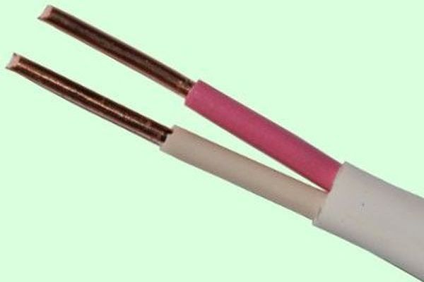
Рис. 1 - Двухжильный однопроволочный провод
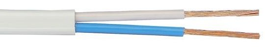
Рис. 2 - Двухжильный провод
Такие провода более гибкие и используются помимо прочего в шнурах подключения электроприборов к сети. Провода, также как и кабеля, служат в электрических и электронных схемах для подведения и распределения питания. В электрике провода используются для запитывания освещения и подведения питания к розеткам.
Расшифруем маркировку на проводах. Возьмем для примера провод АППВ 2×2,5:
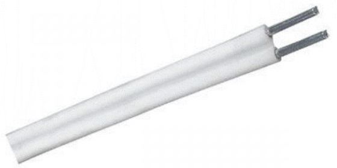
Рис. 3 - Провод АППВ
- Первая буква, материал жилы, в нашем случае (А) означает алюминий. Если материал жилы медь, то буква не ставится, то есть такой же медный провод назывался бы ППВ.
- Вторая буква (П) означает провод.
- Третья буква (П) означает плоский.
- Четвертая буква, материал изоляции, (В) означает поливинилхлоридная изоляция.
- Цифра 2 означает количество жил.
- Цифры 2.5 означают сечение жилы. Измеряется сечение в квадратных миллиметрах.
Cечения проводов в зависимости от потребляемой мощности
Таблица 1
| Медь | Алюминий | Сечение кабеля, мм² |
||||
| Ток, А | Мощность, кВт | Ток, А | Мощность, кВт | |||
| 220 В | 380 В | 220 В | 380 В | |||
| 11 | 2, 4 | - | - | - | - | 0, 5 |
| 15 | 3, 3 | - | - | - | - | 0, 75 |
| 17 | 3, 7 | 6, 4 | - | - | - | 1, 0 |
| 23 | 5, 0 | 8, 7 | - | - | - | 1, 5 |
| 26 | 5, 7 | 9, 8 | 21 | 4, 6 | 7, 9 | 2, 0 |
| 30 | 6, 6 | 11 | 24 | 5, 2 | 9, 1 | 2, 5 |
| 41 | 9, 0 | 15 | 32 | 7, 0 | 12 | 4, 0 |
| 50 | 11 | 19 | 39 | 8, 5 | 14 | 6, 0 |
| 80 | 17 | 30 | 60 | 13 | 22 | 10 |
| 100 | 22 | 38 | 75 | 16 | 28 | 16 |
| 140 | 30 | 53 | 105 | 23 | 39 | 25 |
| 170 | 37 | 64 | 130 | 28 | 49 | 35 |
Таблица 2
| Медь | Алюминий | Сечение кабеля, мм² |
||||
| Ток А | Мощность кВт | Ток А | Мощность кВт | |||
| 220 в | 380 в | 220 в | 380 в | |||
| 14 | 3, 0 | 5, 3 | - | - | - | 1, 0 |
| 15 | 3, 3 | 5, 7 | - | - | - | 1, 5 |
| 19 | 4, 1 | 7, 2 | 14 | 3, 0 | 5, 3 | 2, 0 |
| 21 | 4, 6 | 7, 9 | 16 | 3, 5 | 6, 0 | 2, 5 |
| 27 | 5, 9 | 10 | 21 | 4, 6 | 7, 9 | 4, 0 |
| 34 | 7, 4 | 12 | 26 | 5, 7 | 9, 8 | 6, 0 |
| 50 | 11 | 19 | 38 | 8, 3 | 14 | 10 |
| 80 | 17 | 30 | 55 | 12 | 20 | 16 |
| 100 | 22 | 38 | 65 | 14 | 24 | 25 |
| 135 | 29 | 51 | 75 | 16 | 28 | 35 |
По требованиям ПУЭ фазный провод должен быть коричневого цвета, нулевой провод голубого цвета, а защитный нулевой желто-зеленого.
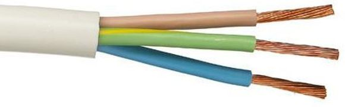
Рис. 4 - Трехжильный провод - цвета
В стенах при разводке проводки сверлятся коронкой отверстия под установочные коробки, и все соединения и ответвления делаются в этих коробках. В советское время все соединения в коробках делались на скрутки, сейчас для соединения часто применяют клеммники.
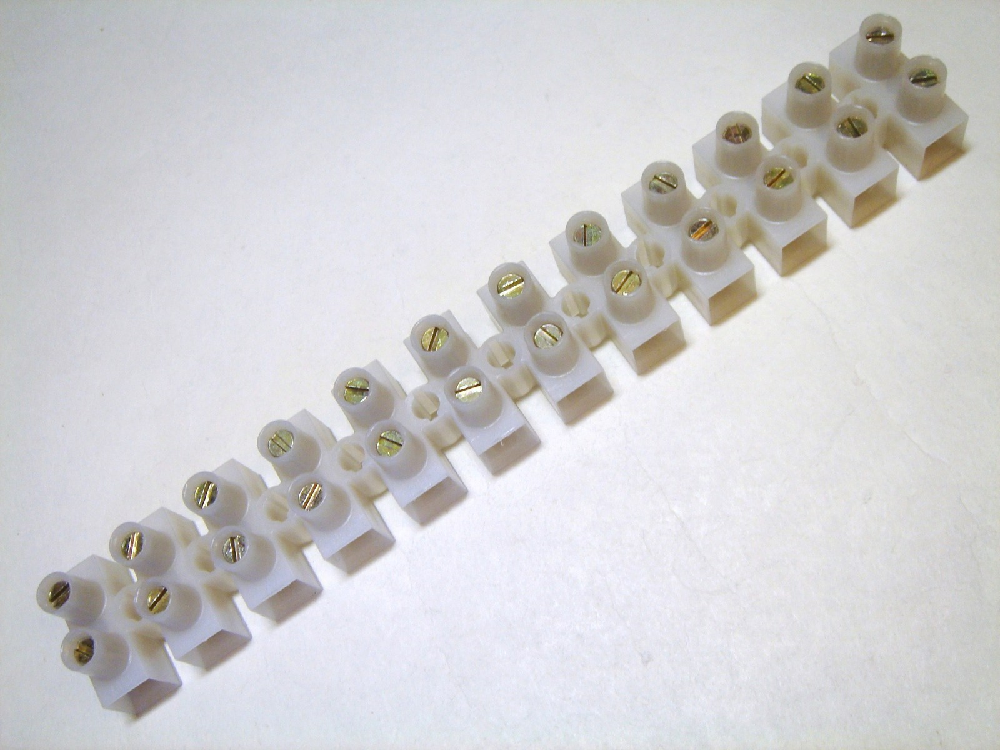
Рис. 5 - Клеммник для соединения проводов
Также находят применение более современные приспособления для соединения в коробках. Одно из таких, это СИЗы, колпачки с подпружиненным контактом, которые накручиваются на соединение проводов, и обеспечивают хороший контакт в их соединении.
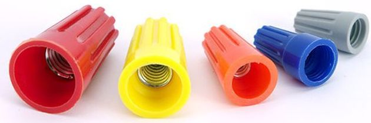
Рис. 6 - Зажим СИЗ 5
Рассмотрим, что нам нужно для того чтобы провести проводку в помещении, которое только отделывается и не имеет разведенной проводки. Нам необходимо, сперва, составить на листе бумаги план, на котором будут указаны размещение розеток и выключателей на стенах, а также наметить отверстия в потолочных плитах для вывода проводов, подключаемых, впоследствии к потолочным светильникам.
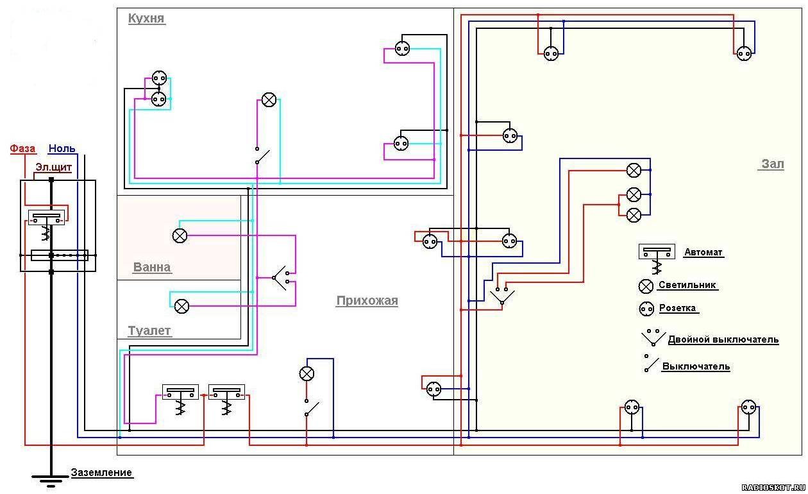
Рис. 7 - Схема электропроводки в квартире
Проводка, как известно, может быть как скрытой, так и открытой. Скрытая проводка прокладывается прямо по стенам, которые впоследствии должны быть оштукатурены. В таком случае в кирпичной кладке сверлятся перфоратором отверстия, забиваются пластмассовые дюбеля, прикрепляется провод с помощью саморезов и жестяных, предварительно нарезанных полосок. Если под рукой нет листа жести, из которого можно нарезать полосок, то крепить провод можно с помощью кусочков жил однопроволочного (не гибкого) провода или кабеля. В таком случае из провода делается петля вокруг самореза, и впоследствии провод крепится к стене путем загибания концов крепящего кусочка провода. Либо можно воспользоваться вот таким креплением:
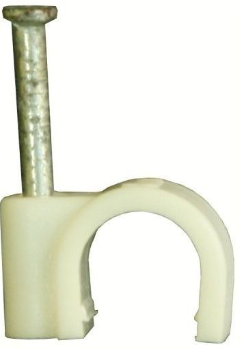
Рис. 8 - U-образный крепеж для проводов
Провод, в целях экономии на слое отделочного материалах (штукатурки), лучше взять плоским и уложить так, чтобы он нигде не выпирал и штукатур, работая мог легко закрыть его слоем штукатурки. Если же по стенам не планируется толстый слой отделочного материала, способный скрыть провода, то для прокладки проводов прорезается с помощью болгарки и металлического диска штроба, в которую укладывается провод.
В потолочных бетонных плитах борозды для закладки проводов не прорезают. Так как в бетонных плитах на этапе заливки оставляют пустоты, идущие вдоль плиты, бывает достаточно просверлить отверстие в месте крепления светильника, и второе отверстие у самой стены, сделав в ней углубление, чтобы провод впоследствии можно было замазать. Эти отверстия должны быть расположены таким образом, чтобы они находились в пределах одной полости в плите. Дальше в одно отверстие просовывается струна, из другого вытаскивается, провод привязывается к струне и затягивается внутрь полости. Если нет в наличии болгарки, штробу в стене можно продолбить с помощью перфоратора, но такой способ более трудоемок, чем с помощью болгарки. Розетки и выключатели при прокладке скрытой проводки, устанавливаются в установочные коробки. Отверстия под установочные коробки сверлятся с помощью такого бура – коронки:
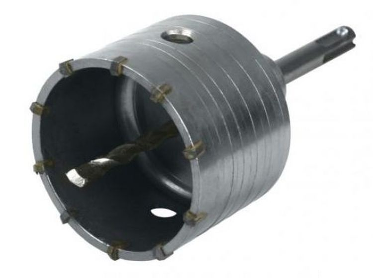
Рис. 9 - Бур-коронка для стен
В эти отверстия с помощью алебастра крепится установочная коробка. Как известно, при скрытой проводке розетки и выключатели крепятся у нас с помощью распорок, которые распирают коробку и за счет этого держится розетка или выключатель. Но иногда, особенно при пользовании розетками такого крепления бывает недостаточно, розетка, если её не придерживать при вынимании вилки, начинает со временем вылазить из коробки.
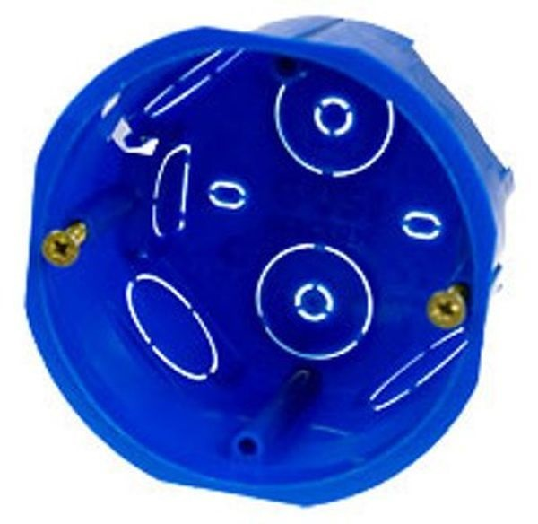
Рис. 10 - Коробка-подрозетник
Поэтому в розетках и выключателях стоящих дороже установлена специальная стальная накладка с отверстиями под саморезы. При установке коробок нужно проследить, чтобы специальные крепежные отверстия под саморезы, были установлены относительно пола, можно сказать в виде вертикально стоящего креста, соответствующего отверстиям в накладке.
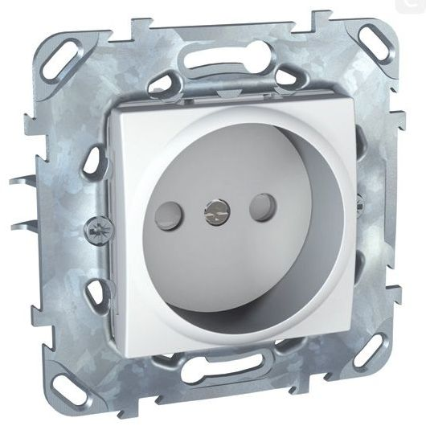
Рис. 11 - Разобранная розетка
После установки в коробку выключателя или розетки его нужно выровнять по уровню относительно пола. В таком случае розетку установив, приблизительно выравнивают, и не сильно затянув винты крепящие накладку к коробке, легкими ударами сбоку по накладке регулируют наклон вправо или влево. Провод в штробах крепится, либо саморезами на расстоянии 50-80 сантиметров друг от друга, либо разведенным алебастром на таком же расстоянии, так чтобы провод не высовывался из штробы.
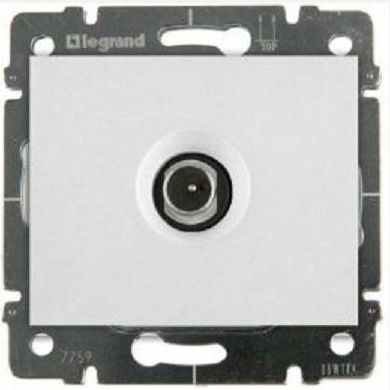
Рис. 12 - Телевизионная розетка
Существуют помимо розеток для сети 220 В телевизионные розетки, а также розетки для проведения интернета кабелем витой парой.
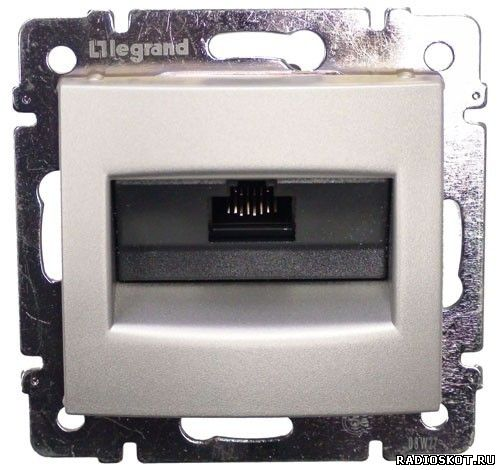
Рис. 13 - Розетка-интернет
Открытая проводка проводится как непосредственно по стенам, так и в кабель-каналах, либо в пластиковых гофрированных трубах.
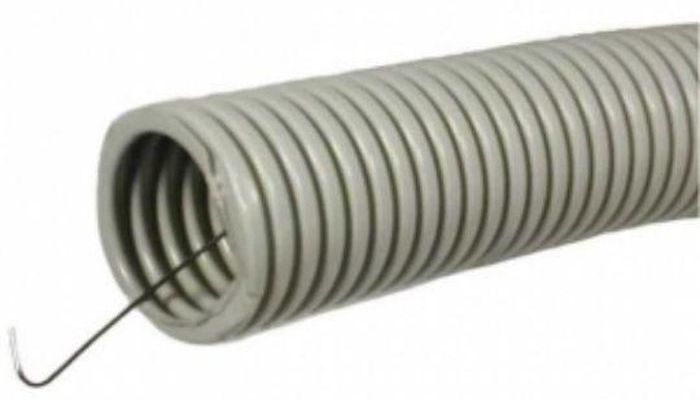
Рис. 14 - Гофрированная труба с проводом
В гофрированных трубах предусмотрена для затягивания провода внутрь трубы струна, упругая стальная проволока. Для того, чтобы затянуть провод внутрь такой трубы, провод прикрепляют с одной стороны к этой струне. Причем нужно обмотать изолентой конец провода и прикрепленный конец струны так, чтобы он не цеплялся при прохождении, внутри трубы за её стенки. Если есть возможность, то можно смазать соединение струны и провода солидолом, для более легкого втягивания провода внутрь гофры. В жилых и офисных помещениях применяется прокладка открытой проводки в кабель-каналах.
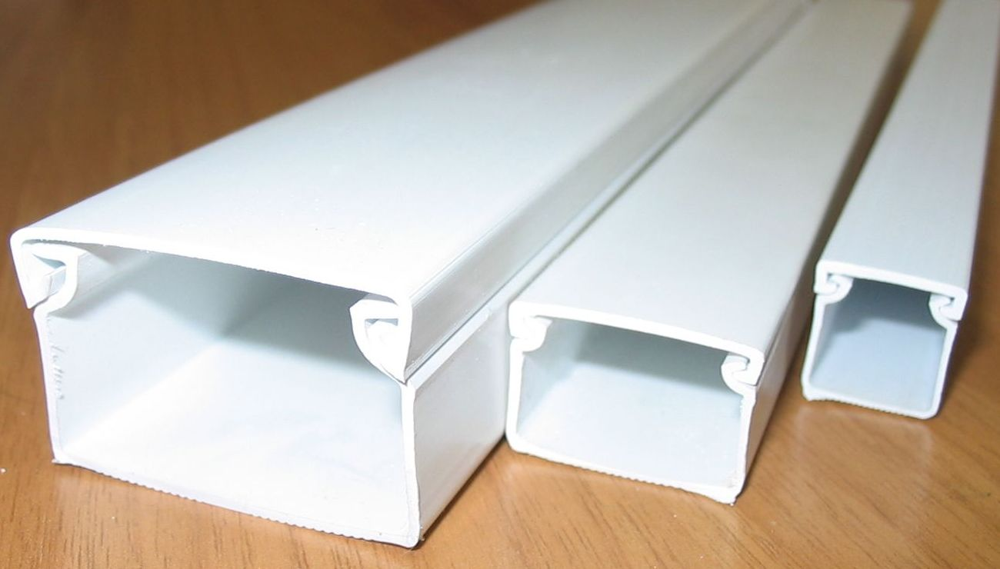
Рис. 15 - Кабель-канал
Проводка, выполненная в кабель-канале смотрится намного привлекательнее, чем выполненная с защитой из гофрированной трубы. Кабель-канал представляет собой вытянутый пластиковый короб, обычно длиной 2 метра, белого цвета с крышкой на защелках. Ширина короба зависит от размеров закладываемого внутрь провода, не имеет смысла брать широкий короб, если внутри планируется проложить один провод небольшого сечения. Прокладывается проводка в кабель-каналах обычно под прямым углом.